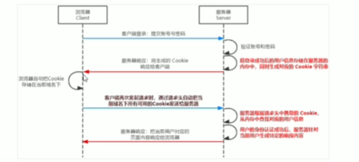

HEADER
Back Homepage
-
Introduction
- node.js内置谷歌V8引擎以及内置API, JS的后端运行环境
- 没有DOM BOM AJAX等浏览器内置API
- 内置fs path http等API
- 第三方API: Express Mysql等
-
fs接口
- 文件读写模块儿 const fs = require("fs")
- fs.readFile(file_path[,options编码格式], callbackFunction(err, data){})
- fs.writeFile(file_path, data[, options], callbackFunction(err){}) 覆盖原内容
- 路径问题: node执行时会以node执行的目录拼接相对路径. 所以应该提供完整的存放路径.
- __dirname表示当前文件所处路径
- path模块:
- const path = require('path')
- path.join(__dirname, '../', 'xxx')
-
path.basename(fPath[, 文件扩展名])返回路径的文件名
- path.extname(fPath)返回扩展名
-
http
- 如果想作为服务器, 则需要在电脑中安装web服务软件比如apache
- node中, http模块可以实现一个web服务器
- 实现步骤:
- 导入http模块 const http = require('http')
- 创建server实例 const server = http.createServer()
- 绑定request事件监听请求
server.on(
'request',
(req, res)=>{
console.log('visitor +1')
}
)
- 启动服务器
server.listen(53535, ()=>{
console.log('server running at http://127.0.0.1:53535')
})
-
req请求对象:
- 服务器收到请求后就会调用server.on()函数绑定的方法
- req包含了客户端相关的数据和属性
- req.url是请求的地址, req.method是请求类型
-
res响应对象
- .end()方法响应结果, 并结束请求处理过程
- 设置响应头避免中文乱码问题
- res.setHeader('Content-Type', 'text/html; charset=utf-8')
-
模块化
- 内置模块 自定义模块 第三方模块
- 使用require()是会执行里面的代码
- 自定义模块中的变量方法等默认只能在模块内部使用
- 共享模块成员:
- module对象: 每个自定义对象都会包含一个module对象
- module.exports.key = value来向外暴露一个对象
- 或者直接 module.exports = Obj 赋值
- 简化: 直接使用exports, 使用require时以module.exports为准
- 规范
- 模块内部module代表当前模块
- module的exports属性提供一个对外的接口
- 加载模块儿实际上加载的是module.exports属性
-
包===第三方模块
- npm: 全球最大包共享平台, 提供检索网站以及包服务器
- npm包管理工具: npm install/i package-name@version
- node_module存放已经安装的包
- package-lock.json 记录包的下载信息
-
包管理配置文件
- package.json记录安装了那些包
- npm init -y命令在一开始使用
- 后面安装的包会自动记录在package.json中
-
dependencies记录了使用npm install安装了那些包
- 使用npm install命令会读取dependencies节点记录的包
- npm uninstall package-name卸载包
- npm install/i package-name@version -D/--save-dev 加到devDependencies中, 代表旨在开发阶段是用的包
-
Express
- 基于nodeJs的Web服务框架, 适用于网站服务器或者API接口服务器
- const app = express()创建实例
- app.listen(port, ()=>{})启动服务器
- app.get('URL', function(req, res){})
- app.post('URL', function(req, res){})
- res.send()返回response给客户端
- 获取?参数 req.query, 默认是一个空对象
- 获取:动态参数 req.params, 默认是一个空对象
- 动态参数就是在冒号后面加上key的名称, 访问的url对应的位置上的字符串作为value一起存储到其中
- express.static('public')指定静态资源路径, app.use(express.static('public'))调用后自动把这一目录下的文件拼接到url后
- 多次调用app.use(express.static('Folder_Path'))可以托管多个
- app.use("URL_Pre" ,express.static('Folder_Path'))给静态自愿添加访问url前缀
-
nodemon
- 代码改变时自动重启服务器
-
Route
- app.METHOD(PATH, HANDLER)
- 路由模块化:
- 创建路由模块对应js
- 调用express.Route()创建路由对象
- 挂载路由并module.exports
- app.use(ROUTE_MODULE)注册路由模块
- 同理可以app.use(Pre_Path ,ROUTE_MODULE)
-
中间件
- 本质是一个function处理函数
- const mw1 = function(req, res ,next){ next(); }
- 全局中间件注册 app.use(mw1)
- 中间件作用
- 中间件共享req以及res的值
- 比如可以在第一层记录接受到请求的时间
- 按着app.use()注册的顺序依次执行
- 局部中间件: app.get(URL, Middleware*n, HANDLER)
- 局部中间件可以多个一起使用, 依次执行
-
注意事项
- 先注册中间件再注册路由
- 可以调用多个中间件
- 必须要调用next()
- next调用之后不要写额外代码了
- 连续调用多个中渐渐后, req res对象是共享的
-
分类
- 应用级别: 使用app.use() / .get() / .post()方法注册的中间件
- 路由级别: 绑定到路由上的router.use(Middleware)
- 错误级别: (err, req, res, next())=>{} 防治项目崩溃, 放在所有路由最后面捕获异常
- 内置中间件: express.static express.json express.urlencoded
- 分别用来解析json格式和urlencoded[form提交的]格式的请求体数据
- app.use(ep.json())
- app.use(ep.urlencoded({extended: false}))
- 如果没有配置解析表单的中间件默认post请求里的req.body为undefined
- 第三方中间件: npm i body-parser引入并使用app.use(parser.urlencoded({extended: false})
- req对象的data事件: req.on('data', (chumk)=>{})可以在接收到请求数据时调用, 确保获得完整数据
- req的end事件: req.on('end', ()=>{})请求体数据接收完后自动触发, 可以在这时的回调函数里做些事情
-
express写接口
- 跨域问题: 协议 域名 端口号不同都会导致跨域问题
- 跨域请求是在返回数据的时候停止
- cors中间件: app.use(cors())
- cors响应头
- res.serHeader("Access-Control-Allow-Origin", "xxx")只允许xxx的跨域请求
- res.serHeader("Access-Control-Allow-Headers", "xxx")cors只支持9个响应头, 额外的需要在这里声明
- res.serHeader("Access-Control-Allow-Methods", "xxx")默认只支持post get head, 其他的比如put delete等需要额外声明
- jsonp请求: 只支持get请求
-
其他
- querystring模块儿可以用来处理查询字符串, 调用parse()方法即可
-
Web开发模式
- 服务器端渲染
- 服务器端发送给客户端html字符串
- 前端耗时少, 有利于SEO
- 占用服务器资源, 无法前后端分离开发
- 适合主要用于展示页面不需要复杂交互的应用场景
- 前后端分离开发模式
- 后端提供Ajsx接口
- 前端更多选择, 使用Vue React Angular等框架
- 减轻服务器端渲染压力
- 不利于网站的SEO[搜索引擎优化(SEO) 通常是指对网站的部分内容进行细微的修改。]
- 适合于后台管理项目
- 身份认证
- 确认用户身份
- 服务端渲染推荐使用session进行认证
- 前后端分离使用JWT认证机制
- session
- HTTP协议的无状态性: 服务器不会保持每次请求的状态
- cookie可以作为身份认证标识, 由客户端发送给服务器端
- cookie存储在浏览器中的字符串[<=4kn], 以键值对的形式存储, 有几个属性控制了有效期安全性以及适用范围
- 每个不同的域名个字是独立的, 客户端发起请求时, 会自动把没有过期的cookies发送给服务器
-
客户端第一次请求服务器的时候,
服务器通过响应头的形式,
向客户端发送一个cookie, 会自动保存在浏览器中,
随后的每次客户端请求都会自动将身份验证相关的cookie以请求头的形式发送给服务器证明身份
- session工作原理

-
express的Session中间件
- const session = require("express-session")
-
app.use(session({
secret: "用来加密的任意字符串",
resave: false,
saveUninitialized: true
}))
- 配置session中间件之后, 通过req.session来使用和访问session对象
- req.session.detory()
-
JWT认证机制
- session需要配合cookie才能使用, 默认不支持跨域
- JWT: json web token
- 工作原理
- 用户信息通过token字符串的形式由服务器发送给客户端并保存, 后续的登录把token放在header里面一并发送给服务器并验证
- 组成: Header[安全性相关].Payload[用户信息加密].Signature[安全性相关]
- 使用方法: 将其放入Authorization请求头中, Authorization: Bearer <token>
-
jsonwentoken: 生成JWT字符串;
express-jwt: 解析客户端发来的jwt字符串为Json
- 登陆成功后, jsonwebtoken.sign(用户信息对象, 加密秘钥, 配置对象[有效期等])